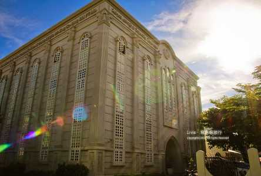
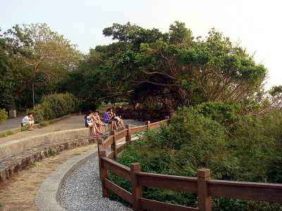
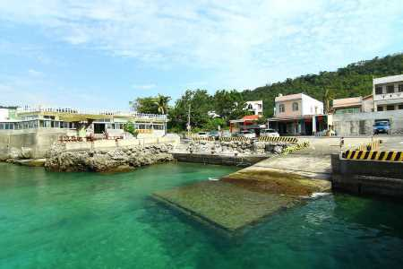
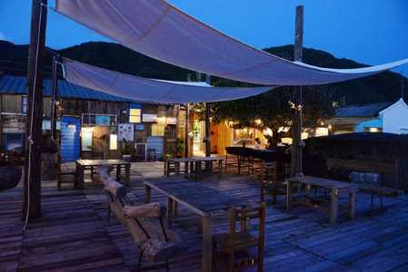
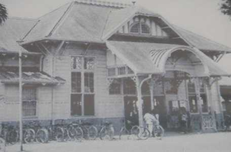

關於屏東
INTRODUCE
國境列車最南站-屏東
屏東，來自於島國之南，身為陽光兒女的我們一直是熱情的代名詞。三面環海的地形，四季如春的氣候，以及濃濃的人情味，造就了我們豐富的文化內涵。
古跡，我們從位於恆春，同時也在海角七號中軋了一角的南門到有著百年歷史，自日治時期火車即開始噴吐黑煙隆隆作響的竹田車站，歲月為他們帶來的不是摧殘，而是洗禮，和嘆為觀止的蛻變、新生。而美食，屏東美食在台灣的地位從來就無法忽視，不管是Q彈有勁的肉圓，獨樹一幟的旗魚黑輪，平民美食肉燥飯，以及頂港有名聲下港有出名的碗粿，甚至是多不勝數藏在巷弄裡的令人食指大動，在在都是屏東美食的代表。
隨著墾丁的艷陽，波濤輕拍的海岸，晴朗的藍天，你，準備好跟我們一起投入屏東熱情陽光的懷抱了嗎？
私房屏東
SECRET
旭海大草原
屏東教會

關山

萬里桐

好樂杯冰

屏東小故事
HISTORY

屏東火車站

屏東站舊站「阿緱驛」，第1代車站於民國2年啟用，為木造站房，因地方改制，改名為「屏東驛」並於民國50年改建為改建為鋼筋水泥車站，也就是第2代屏東車站。
第2代車站民國51年啟用，在當時是最先進的建築，承載著台灣經濟起飛、鐵路現代化的歷史，包含了民國76年，高雄至屏東間雙軌化、民國85年高屏間鐵路電氣化完成，今年8月，將在第3代高架火車站啟用後功成身退。
目前第3代屏東火車站已實施全面高架化，並全面通車，原本舊火車站將規劃為站前廣場，提供居民及遊客更完善的使用空間，第3代火車站將接替第2代火車站，繼續帶領屏東成長進步。


聯絡我們
CONTACT


※頁面上些許照片取自google，如有版權問題歡迎隨時聯絡，必定盡力配合，感謝。
© Copyright c-week.elebymax.net 2016